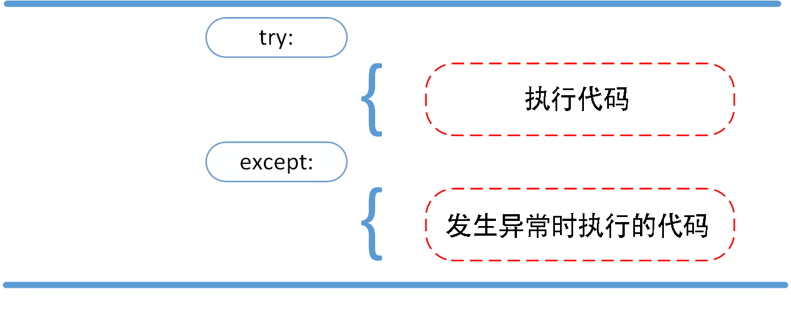
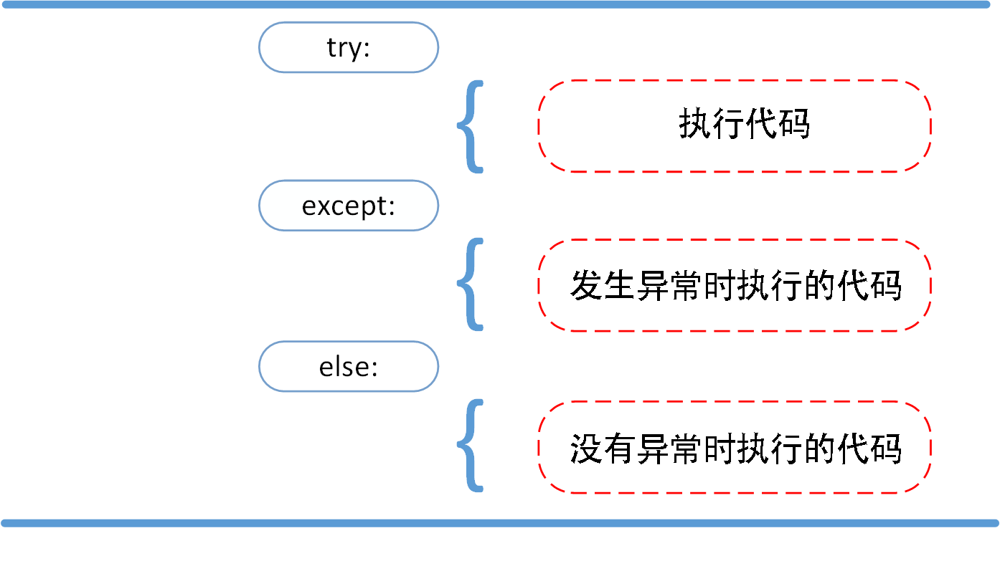
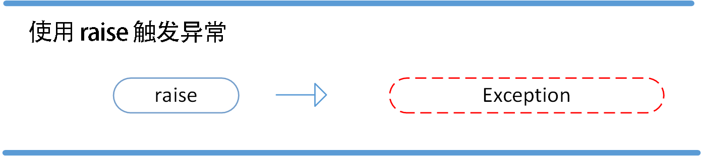

Python3 エラーと例外
Python 初心者として、Python プログラミングを学び始めたばかりの頃は、エラーメッセージをよく目にすることがあります。前に触れていませんでしたが、この章で詳しく紹介します。
Python には、簡単に識別できる2種類のエラーがあります。構文エラーと例外です。
Python の assert（アサーション）は式を評価するために使用され、式の条件が false の場合に例外を発生させます。

構文エラー
Python の構文エラー、またはパースエラーと呼ばれるものは、初心者がよく遭遇するものです。次の例をご覧ください。
File "<stdin>", line 1, in ?
while True print('Hello world')
^
SyntaxError: invalid syntax
この例では、関数 print() にエラーが検出されました。その前のコロンが欠けているためです。: 。
構文解析器はエラーが発生した行を示し、最初にエラーが見つかった位置に小さな矢印をマークします。
例外
Python プログラムの構文が正しい場合でも、実行中にエラーが発生する可能性があります。実行時に検出されたエラーは例外と呼ばれます。
ほとんどの例外はプログラムで処理されず、エラーメッセージの形でここに表示されます。
例
Traceback (most recent call last):
File "<stdin>", line 1, in ?
ZeroDivisionError: division by zero
>>> 4 + spam*3 # spam が未定義のため、例外が発生します
Traceback (most recent call last):
File "<stdin>", line 1, in ?
NameError: name 'spam' is not defined
>>> '2' + 2 # int は str と加算できないため、例外が発生します
Traceback (most recent call last):
File "<stdin>", line 1, in <module>
TypeError: can only concatenate str (not "int") to str
例外はさまざまな型で発生し、これらの型は情報の一部として出力されます。例の中の型には ZeroDivisionError、NameError、TypeError があります。
エラーメッセージの前半部分は、例外が発生したコンテキストを示し、呼び出しスタックの形式で具体的な情報を表示します。
例外処理
try/except
例外の捕捉にはtry/except文を使用できます。

次の例では、ユーザーに有効な整数を入力させますが、ユーザーがプログラムを中断することもできます（Control-C または OS が提供する方法を使用）。ユーザーによる中断は KeyboardInterrupt 例外を発生させます。
try:
x = int(input("数字を入力してください: "))
break
except ValueError:
print("入力したのは数字ではありません。もう一度入力してください！")
try 文は次のように動作します。
まず、try 節（キーワード try とキーワード except の間の文）が実行されます。
例外が発生しなければ、except 節は無視され、try 節が実行された後に終了します。
try 節の実行中に例外が発生した場合、try 節の残りの部分は無視されます。例外の型が except の後の名前と一致する場合は、対応する except 節が実行されます。
例外がいずれの except とも一致しない場合、その例外は上位の try に渡されます。
1 つの try 文には複数の except 節を含めることができ、それぞれが異なる特定の例外を処理します。実行される分岐は最大で 1 つだけです。
ハンドラは、対応する try 節で発生した例外のみを処理し、他の try のハンドラで発生した例外は処理しません。
1 つの except 節で複数の例外を同時に処理できます。これらの例外は括弧内に置かれてタプルになります。例:
pass
最後の except 節では例外の名前を省略でき、ワイルドカードとして使用されます。この方法を使用してエラーメッセージを出力し、その後再び例外を投げることができます。
try:
f = open('myfile.txt')
s = f.readline()
i = int(s.strip())
except OSError as err:
print("OS error: {0}".format(err))
except ValueError:
print("Could not convert data to an integer.")
except:
print("Unexpected error:", sys.exc_info()[0])
raise
try/except...else
try/except文にはオプションのelse節があります。この節を使用する場合は、すべての except 節の後に置く必要があります。
else 節は、try 節で例外が発生しなかった場合に実行されます。

次の例では、try 文でファイルを開けるかどうかを判定し、ファイルを開く際に正常で例外が発生しなかった場合、else 部分の文を実行してファイルの内容を読み取ります。
try:
f = open(arg, 'r')
except IOError:
print('cannot open', arg)
else:
print(arg, 'has', len(f.readlines()), 'lines')
f.close()
else 節を使用する方が、すべての文を try 節内に置くよりも優れています。これにより、予期しないもので except では捕捉できない例外を避けることができます。
例外処理は、try 節内で直接発生した例外だけでなく、節内で呼び出された関数（間接的に呼び出された関数も含む）でスローされた例外も処理できます。例:
x = 1/0
>>> try:
this_fails()
except ZeroDivisionError as err:
print('Handling run-time error:', err)
Handling run-time error: int division or modulo by zero
try-finally 文
try-finally 文は、例外が発生するかどうかに関係なく、最後のコードを実行します。

次の例では、finally 文は例外が発生するかどうかに関係なく実行されます。
例
runoob()
except AssertionError as error:
print(error)
else:
try:
with open('file.log') as file:
read_data = file.read()
except FileNotFoundError as fnf_error:
print(fnf_error)
finally:
print('この文は、例外が発生するかどうかに関係なく実行されます。')
例外をスローする
Python は raise 文を使用して、指定した例外をスローします。
raise の構文形式は次のとおりです。
raise [Exception [, args [, traceback]]]

次の例では、x が 5 より大きい場合に例外が発生します。
if x > 5:
raise Exception('x は 5 より大きくできません。x の値: {}'.format(x))
上記のコードを実行すると例外が発生します。
Traceback (most recent call last):
File "test.py", line 3, in <module>
raise Exception('x 不能大于 5。x 的值为: {}'.format(x))
Exception: x 不能大于 5。x 的值为: 10
raise の唯一のパラメータは、スローされる例外を指定します。これは、例外のインスタンスまたは例外のクラス（つまり Exception のサブクラス）でなければなりません。
例外がスローされたかどうかだけを知りたい場合で、それを処理したくない場合は、単純な raise 文で再びスローできます。
raise NameError('HiThere') # 例外をシミュレートします。
except NameError:
print('An exception flew by!')
raise
An exception flew by!
Traceback (most recent call last):
File "<stdin>", line 2, in ?
NameError: HiThere
ユーザー定義の例外
新しい例外クラスを作成することで、独自の例外を持つことができます。例外クラスは Exception クラスを継承します。直接継承することも、間接的に継承することもできます。例:
def __init__(self, value):
self.value = value
def __str__(self):
return repr(self.value)
>>> try:
raise MyError(2*2)
except MyError as e:
print('My exception occurred, value:', e.value)
My exception occurred, value: 4
>>> raise MyError('oops!')
Traceback (most recent call last):
File "<stdin>", line 1, in ?
__main__.MyError: 'oops!'
この例では、クラス Exception のデフォルトの __init__() がオーバーライドされています。
モジュールが複数の異なる例外をスローする可能性がある場合、一般的な方法は、パッケージ用に基本例外クラスを定義し、その基本クラスに基づいてさまざまなエラー状況に応じて異なるサブクラスを作成することです。
"""Base class for exceptions in this module."""
pass
class InputError(Error):
"""Exception raised for errors in the input.
Attributes:
expression -- input expression in which the error occurred
message -- explanation of the error
"""
def __init__(self, expression, message):
self.expression = expression
self.message = message
class TransitionError(Error):
"""Raised when an operation attempts a state transition that's not
allowed.
Attributes:
previous -- state at beginning of transition
next -- attempted new state
message -- explanation of why the specific transition is not allowed
"""
def __init__(self, previous, next, message):
self.previous = previous
self.next = next
self.message = message
ほとんどの例外の名前は、標準の例外の命名と同様に「Error」で終わります。
クリーンアップ動作の定義
try 文には、どのような状況でも実行されるクリーンアップ動作を定義する、もう 1 つのオプションの節があります。例:
... raise KeyboardInterrupt
... finally:
... print('Goodbye, world!')
...
Goodbye, world!
Traceback (most recent call last):
File "<stdin>", line 2, in <module>
KeyboardInterrupt
上記の例では、try 節内で例外が発生したかどうかに関係なく、finally 節が実行されます。
try 節内（または except 節や else 節内）で例外がスローされ、それを捕捉する except がない場合、その例外は finally 節の実行後にスローされます。
以下はより複雑な例です（同じ try 文内に except 節と finally 節を含む）。
try:
result = x / y
except ZeroDivisionError:
print("division by zero!")
else:
print("result is", result)
finally:
print("executing finally clause")
>>> divide(2, 1)
result is 2.0
executing finally clause
>>> divide(2, 0)
division by zero!
executing finally clause
>>> divide("2", "1")
executing finally clause
Traceback (most recent call last):
File "<stdin>", line 1, in ?
File "<stdin>", line 3, in divide
TypeError: unsupported operand type(s) for /: 'str' and 'str'
定義済みのクリーンアップ動作
一部のオブジェクトは標準のクリーンアップ動作を定義しています。システムがそれを正常に使用できたかどうかに関係なく、不要になった時点で、その標準のクリーンアップ動作が実行されます。
次の例は、ファイルを開いてその内容を画面に出力する試みを示しています。
print(line, end="")
上記のコードの問題は、実行が完了した後もファイルが開かれたままになり、閉じられないことです。
with キーワードを使用した文は、ファイルなどのオブジェクトが使用後に必ず正しくクリーンアップメソッドを実行することが保証されます。
for line in f:
print(line, end="")
上記のコードの実行後は、処理中に問題が発生した場合でも、ファイル f は常に閉じられます。
with キーワードの詳細については、以下を参照してください。Python with キーワード
哇咔咔
hao***nyang249@163.com
python3 では、パラメータを持つ例外を処理する方法は次のとおりです。
# 定义函数 def temp_convert(var): try: return int(var) except (ValueError) as Argument: print ("参数没有包含数字\n", Argument) # 调用函数 temp_convert("xyz");哇咔咔
hao***nyang249@163.com
Yota Togashi
116***47@qq.com
例外は後方に伝播するため、通常見られるエラーの位置は比較的後方になります。次の例：
def test1(): print('test1-1') print(num) print('test2-2') def test2(): print('test2-1') test1() print('test2-2') def test3(): try: print('test3-1') test1() print('test3-2') except Exception as result: print('检测出异常{}'.format(result)) print('test3-2') test3() print('-------------') test2()Yota Togashi
116***47@qq.com
黑桃六
pan***a68@hotmail.com
with は便利なものです。ファイルを開くときは積極的に使用すると、多くの問題を避けられます。例：
temp = os.open('test_text.txt', os.O_RDWR | os.O_CREAT) temp_file = os.fdopen(temp, 'r') print(str(temp_file.read())) os.close(temp)次のように簡略化できます：
with open('test_text.txt', 'r') as f: print(f.read())黑桃六
pan***a68@hotmail.com
redhands
zho***cc@qq.com
参考リンク
Python3 組み込み例外型の構造：
BaseException +-- SystemExit +-- KeyboardInterrupt +-- GeneratorExit +-- Exception +-- StopIteration +-- StopAsyncIteration +-- ArithmeticError | +-- FloatingPointError | +-- OverflowError | +-- ZeroDivisionError +-- AssertionError +-- AttributeError +-- BufferError +-- EOFError +-- ImportError | +-- ModuleNotFoundError +-- LookupError | +-- IndexError | +-- KeyError +-- MemoryError +-- NameError | +-- UnboundLocalError +-- OSError | +-- BlockingIOError | +-- ChildProcessError | +-- ConnectionError | | +-- BrokenPipeError | | +-- ConnectionAbortedError | | +-- ConnectionRefusedError | | +-- ConnectionResetError | +-- FileExistsError | +-- FileNotFoundError | +-- InterruptedError | +-- IsADirectoryError | +-- NotADirectoryError | +-- PermissionError | +-- ProcessLookupError | +-- TimeoutError +-- ReferenceError +-- RuntimeError | +-- NotImplementedError | +-- RecursionError +-- SyntaxError | +-- IndentationError | +-- TabError +-- SystemError +-- TypeError +-- ValueError | +-- UnicodeError | +-- UnicodeDecodeError | +-- UnicodeEncodeError | +-- UnicodeTranslateError +-- Warning +-- DeprecationWarning +-- PendingDeprecationWarning +-- RuntimeWarning +-- SyntaxWarning +-- UserWarning +-- FutureWarning +-- ImportWarning +-- UnicodeWarning +-- BytesWarning +-- ResourceWarningredhands
zho***cc@qq.com
参考リンク
CJimer
604***021@qq.com
1つのブロックで複数の例外をキャッチする：
def model_exception(x,y): try: b = name a =x/y except(ZeroDivisionError,NameError,TypeError): print('one of ZeroDivisionError or NameError or TypeError happend') #调用函数结果 model_exception(2,0)出力は以下のとおりです：
CJimer
604***021@qq.com
小c
413***465@qq.com
参考アドレス
すべての例外をキャッチする：
try: ... except Exception as e: ... log('Reason:', e) # Important!これは、SystemExit、KeyboardInterrupt、GeneratorExit を除くすべての例外をキャッチします。 さらにこの3つの例外もキャッチしたい場合は、Exception を BaseException に変更してください。
小c
413***465@qq.com
参考アドレス